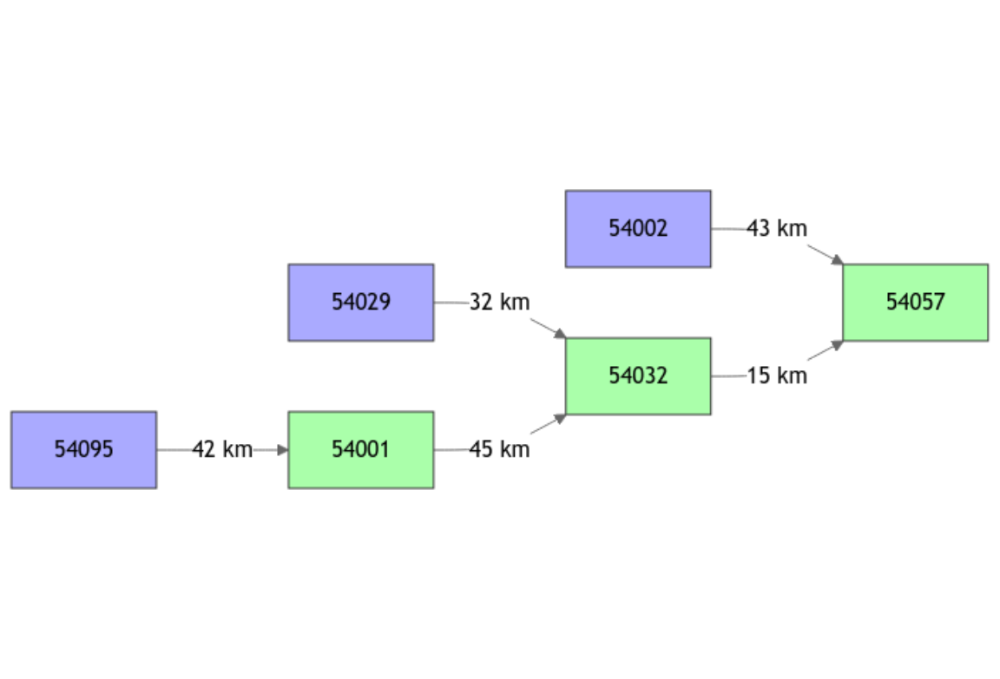

vignettes/V01_Structure_SD_model.Rmd
V01_Structure_SD_model.Rmd#> Loading required package: airGR#>
#> Attaching package: 'airGRiwrm'#> The following objects are masked from 'package:airGR':
#>
#> Calibration, CreateCalibOptions, CreateInputsCrit,
#> CreateInputsModel, CreateRunOptions, RunModelThe package airGRiwrm is a modeling tool for integrated water resources management based on the airGR package (See Coron et al. 2017).
In a semi-distributed model, the catchment is divided into several sub-catchments. Each sub-catchment is an hydrological entity where a runfall-runoff model produces a flow time series at the outlet of the sub-catchment. Then, these flows are propagated from sub-catchment outlets thanks to a hydraulic function to model the flow at the outlet of the whole catchment. The aim of airGRiwrm is to organize the structure and schedule the execution of the hydrological and hydraulic sub-models contained in the semi-distributed model.
In this vignette, we show how to prepare observation data for the model.
The example of this tutorial takes place on the Severn River in the United Kingdom. The data set comes from the CAMELS GB database (see Coxon et al. 2020).
data(Severn)
Severn$BasinsInfo#> gauge_id gauge_name gauge_lat gauge_lon area elev_mean
#> 1 54057 Severn at Haw Bridge 51.95 -2.23 9885.46 145
#> 2 54032 Severn at Saxons Lode 52.05 -2.20 6864.88 170
#> 3 54001 Severn at Bewdley 52.38 -2.32 4329.90 175
#> 4 54095 Severn at Buildwas 52.64 -2.53 3722.68 186
#> 5 54002 Avon at Evesham 52.09 -1.94 2207.95 99
#> 6 54029 Teme at Knightsford Bridge 52.20 -2.39 1483.65 212
#> station_type flow_period_start flow_period_end bankfull_flow downstream_id
#> 1 VA 1971-07-01 2015-09-30 460 <NA>
#> 2 US 1970-10-01 2015-09-30 340 54057
#> 3 US 1970-10-01 2015-09-30 420 54032
#> 4 US 1984-03-01 2015-09-30 285 54001
#> 5 VA 1970-10-01 2015-09-30 125 54057
#> 6 FV 1970-10-01 2015-09-30 190 54032
#> distance_downstream
#> 1 NA
#> 2 15
#> 3 45
#> 4 42
#> 5 43
#> 6 32The semi-distributed model comprises nodes. Each node, identified by an ID, represents a location where water is injected to or withdrawn from the network.
The description of the topology consists, for each node, in providing several fields:
NA
for the last downstream node (i.e. the outlet of the simulated
catchment)),NA for
the last downstream node),NA).Below, we constitute a data.frame bringing together all
this information for the tutorial example:
nodes <- Severn$BasinsInfo[, c("gauge_id", "downstream_id", "distance_downstream", "area")]
nodes$model <- "RunModel_GR4J"The network description consists in a GRiwrm object that
lists the nodes and describes the network diagram. It is a
data.frame of class GRiwrm with specific
column names:
id: the identifier of the node in the network,down: the identifier of the next hydrological node
downstream,length: hydraulic distance to the next hydrological
downstream node (m),model: name of the hydrological model used (E.g.
“RunModel_GR4J”). NA for other types of nodes,area: area of the sub-catchment (km2). Used
for hydrological model such as GR models. NA if not
used.The GRiwrm function helps to create an object of class
GRiwrm. It renames the columns of the
data.frame.
griwrm <- CreateGRiwrm(nodes, list(id = "gauge_id", down = "downstream_id", length = "distance_downstream"))
griwrm#> id down length area model donor
#> 4 54095 54001 42 3722.68 RunModel_GR4J 54095
#> 5 54002 54057 43 2207.95 RunModel_GR4J 54002
#> 6 54029 54032 32 1483.65 RunModel_GR4J 54029
#> 3 54001 54032 45 4329.90 RunModel_GR4J 54001
#> 2 54032 54057 15 6864.88 RunModel_GR4J 54032
#> 1 54057 <NA> NA 9885.46 RunModel_GR4J 54057The diagram of the network structure is represented below with in blue the upstream nodes with a GR4J model and in green the intermediate nodes with an SD (GR4J + LAG) model.
plot(griwrm)
Observations (precipitation, potential evapotranspiration (PE) and flows) should be formatted in a separate data.frame with one column of data per sub-catchment.
BasinsObs <- Severn$BasinsObs
str(BasinsObs)#> List of 6
#> $ 54001:'data.frame': 11536 obs. of 4 variables:
#> ..$ DatesR : POSIXct[1:11536], format: "1984-03-01" "1984-03-02" ...
#> ..$ precipitation : num [1:11536] 3.63 0.55 2.09 0.38 0.01 0.25 0.1 0 0.11 0.08 ...
#> ..$ peti : num [1:11536] 0.59 1.65 1.44 0.3 0.58 0.73 0.59 0.66 0.58 0.62 ...
#> ..$ discharge_spec: num [1:11536] 0.77 0.77 0.76 0.74 0.72 0.69 0.64 0.6 0.59 0.54 ...
#> $ 54002:'data.frame': 11536 obs. of 4 variables:
#> ..$ DatesR : POSIXct[1:11536], format: "1984-03-01" "1984-03-02" ...
#> ..$ precipitation : num [1:11536] 1.58 0.47 1.35 1.92 0.06 0 0.01 0 0.08 0.34 ...
#> ..$ peti : num [1:11536] 0.61 1.7 1.61 0.3 0.44 0.69 0.52 0.71 0.73 0.57 ...
#> ..$ discharge_spec: num [1:11536] 0.62 0.63 0.56 0.52 0.52 0.54 0.5 0.48 0.46 0.45 ...
#> $ 54029:'data.frame': 11536 obs. of 4 variables:
#> ..$ DatesR : POSIXct[1:11536], format: "1984-03-01" "1984-03-02" ...
#> ..$ precipitation : num [1:11536] 2.38 0.33 2.16 0.38 0.01 0.12 0.08 0.05 0.05 0.29 ...
#> ..$ peti : num [1:11536] 0.58 1.64 1.49 0.23 0.56 0.72 0.63 0.72 0.62 0.64 ...
#> ..$ discharge_spec: num [1:11536] 0.79 0.79 0.73 0.7 0.68 0.63 0.61 0.59 0.57 0.57 ...
#> $ 54032:'data.frame': 11536 obs. of 4 variables:
#> ..$ DatesR : POSIXct[1:11536], format: "1984-03-01" "1984-03-02" ...
#> ..$ precipitation : num [1:11536] 3.07 0.49 2.12 0.51 0.01 0.19 0.08 0.01 0.08 0.14 ...
#> ..$ peti : num [1:11536] 0.59 1.64 1.47 0.27 0.57 0.72 0.61 0.68 0.6 0.63 ...
#> ..$ discharge_spec: num [1:11536] 0.84 0.83 0.81 0.79 0.78 0.73 0.65 0.61 0.6 0.57 ...
#> $ 54057:'data.frame': 11536 obs. of 4 variables:
#> ..$ DatesR : POSIXct[1:11536], format: "1984-03-01" "1984-03-02" ...
#> ..$ precipitation : num [1:11536] 2.61 0.46 1.9 0.91 0.02 0.13 0.06 0.01 0.08 0.22 ...
#> ..$ peti : num [1:11536] 0.59 1.65 1.51 0.28 0.53 0.71 0.59 0.69 0.64 0.62 ...
#> ..$ discharge_spec: num [1:11536] 0.66 0.67 0.64 0.64 0.63 0.61 0.56 0.52 0.51 0.5 ...
#> $ 54095:'data.frame': 11536 obs. of 4 variables:
#> ..$ DatesR : POSIXct[1:11536], format: "1984-03-01" "1984-03-02" ...
#> ..$ precipitation : num [1:11536] 4.01 0.57 2 0.37 0.01 0.3 0.12 0 0.12 0.07 ...
#> ..$ peti : num [1:11536] 0.59 1.64 1.42 0.31 0.59 0.73 0.59 0.66 0.57 0.61 ...
#> ..$ discharge_spec: num [1:11536] 0.9 0.9 0.94 0.87 0.86 0.81 0.76 0.73 0.7 0.69 ...
DatesR <- BasinsObs[[1]]$DatesR
PrecipTot <- cbind(sapply(BasinsObs, function(x) {x$precipitation}))
PotEvapTot <- cbind(sapply(BasinsObs, function(x) {x$peti}))
Qobs <- cbind(sapply(BasinsObs, function(x) {x$discharge_spec}))These meteorological data consist in mean precipitation and PE for
each basin. However, the model needs mean precipitation and PE at
sub-basin scale. The function ConvertMeteoSD calculates
these values for downstream sub-basins:
Precip <- ConvertMeteoSD(griwrm, PrecipTot)
PotEvap <- ConvertMeteoSD(griwrm, PotEvapTot)The GRiwrmInputsModel object is a list of
airGR InputsModel objects. The identifier
of the sub-basin is used as a key in the list which is ordered from
upstream to downstream.
The airGR CreateInputsModel function is
extended in order to handle the GRiwrm object that
describes the basin diagram:
InputsModel <- CreateInputsModel(griwrm, DatesR, Precip, PotEvap)#> CreateInputsModel.GRiwrm: Processing sub-basin 54095...#> CreateInputsModel.GRiwrm: Processing sub-basin 54002...#> CreateInputsModel.GRiwrm: Processing sub-basin 54029...#> CreateInputsModel.GRiwrm: Processing sub-basin 54001...#> CreateInputsModel.GRiwrm: Processing sub-basin 54032...#> CreateInputsModel.GRiwrm: Processing sub-basin 54057...